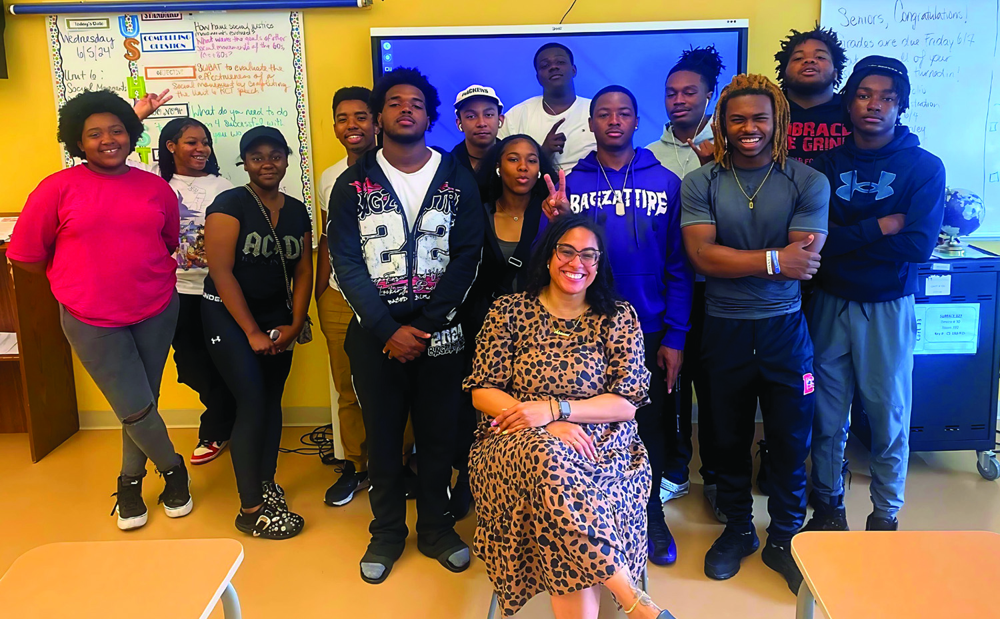

FY2026 Gilder Lehrman Institute (GLI) Highlights

Our Mission
Studying American history deepens our
understanding of who we are as a nation and
our roles as individuals. It allows us to see
how principles like liberty, equality, and justice
have evolved—and how they continue to be
tested and redefined. Understanding the
ideals and events that shaped our nation,
especially during the founding era, offers
context, insight, and a foundation for
meaningful conversation.
The Institute is the leading nonprofit and
nonpartisan organization dedicated to
improving the teaching and learning of
American history through educational
programs and resources. We serve K–12
teachers and students, honor scholars, and
welcome and inform the general public.
Knowing our shared story is essential for our
future. By deepening our understanding of
the founding era and the broader American
narrative, we fortify the pillars of civic society
and foster critical thinking for a lifetime.
This year, we rededicated ourselves to this
mission by supporting educators, inspiring
students, and bringing communities together
to explore America’s past. This report shares
the programs, partnerships, and results that
brought history into classrooms across the
country.
Milestones in FY2026
Declaration at 250 Resource Hub Completed

Undergraduate Advisory Council Launched

NYC Students Discussed the Revolution with Ken Burns and Lin-Manuel Miranda

A NOTE ON OUR REPORTING YEAR: Beginning with this report, the Gilder Lehrman Institute has transitioned from calendar-year to fiscal-year reporting. The figures and highlights that follow reflect our FY26 fiscal year (July–June) rather than a calendar year.

LETTER FROM
Jim Basker, President and CEO
This past year, the Gilder Lehrman Institute continued to ask a question that has guided our work since our founding: How can we help teachers give students the historical knowledge and perspective they need to be thoughtful citizens of a democracy?
As we celebrate this year the 250th anniversary of the Declaration of Independence, we have expanded our offerings across every channel, including new online resources and curricula, immersive exhibitions, and programs for educators. Our panel exhibition Declaration 1776: The Big Bang of Modern Democracy traces the far-reaching effects of the Declaration’s ideals across the centuries and around the world, from the birth of the Civil Rights Movement in the 1770s to the 19th-century revolutions across Latin America to the breakup of the Soviet Union at the end of the 20th century. Together, these resources reflect our belief that the founding era is not a historical curiosity—it is essential to what teachers cover in their classrooms every single year.
But the scale of our challenge is immense. Each year, four million students graduate from high school and become our fellow citizens eligible to vote and fully participate in our democracy. In a time of deep divisiveness and apathy, we believe that historical perspective offers more than context. It offers hope. Lincoln, standing in the Gettysburg cemetery with no certainty that the Union would survive, turned to the Declaration and prophesied a “new birth of freedom.” In that spirit, historical perspective can help us place our own moment in the arc of our nation’s ongoing pursuit of “a more perfect union.”
Lewis Lehrman and Richard Gilder helped build this Institute around the conviction that American history is the foundation of citizenship itself. We are committed to carrying that vision forward with the same devotion and care they brought to this work from the beginning.
We are grateful to our Board of Trustees, our donors, and our partners for enabling this essential work. Join us in equipping the millions of young Americans who will shape our democracy’s future with the tools they need to keep our country thriving.
Jim Basker
President and CEO

IN MEMORIAM:
Lewis E. Lehrman (1938–2026)
The Gilder Lehrman Institute lost its co-founder, co-chairman, and guiding spirit this year. Lewis Lehrman shaped nearly every part of the work this report includes: the Collection, the prizes, the seminars, the partnerships, and the Affiliate School network of nearly 40,000 schools. None of it would exist without him.
Lew was a Renaissance man. A businessman who built Rite Aid into one of the largest pharmacy chains in the country. An economist who advised presidents and testified before Congress. A candidate who came within three points of the governorship of New York. A scholar who wrote books on Lincoln, on Churchill, on the gold standard, and on the American founders.
But the work he was proudest of, and the work for which he will be remembered longest, was the work of a teacher. He believed that American history—taught honestly, taught from the documents, taught to every student in every kind of school—was the foundation of citizenship itself.
With his longtime friend and partner Richard Gilder, Lew built an institute around that conviction. He showed up for it, year after year, decade after decade. He delighted in the company of students. He paid attention to young people in ways large and small, often through quiet gestures that only the recipients knew about.
We carry Lew’s work forward with gratitude and with the knowledge that the best tribute we can offer him is the one he would have asked for: continue the mission and don’t give up.


A Focus on Students
AFFILIATE SCHOOL PROGRAM
The Gilder Lehrman Institute’s Affiliate School Program has grown into a network of 38,600 K–12 schools, representing more than 100,000 teachers and 15 million students nationwide. Since 2009, the program has provided free resources, events, and tools designed to bring American history to life in classrooms of all sizes and settings. Growth continues each year, with more than 1,700 schools joining in FY2026 alone.
The Affiliate School Program serves as a one-stop hub for educators, offering professional development, access to leading scholars, student opportunities, and both in-person and online experiences.
Teachers also receive free classroom-ready materials—such as posters, calendars, and resource guides—which were requested more than 58,000 times this year.
Popular offerings this year include our 2026 Gilder Lehrman Calendar, a set of posters showcasing propaganda images of Boston during the Revolutionary period, and a timeline covering the colonial to Revolutionary eras.
| Tuscaloosa Public Schools (AL) | Metro Nashville Public Schools (TN) |
| Palm Beach County Schools (FL) | Sevier County Schools (TN) |
| Portland Public Schools (OR) | Prince William County Schools (VA) |
OUR GROWING NETWORK OF AFFILIATE SCHOOLS

History U
History U gives high school students free, self-paced access to American history courses drawn from our renowned MA in American History program. Designed for independent learning, the courses have already engaged more than 7,600 students in all 50 states and 15 countries.
History School Book Club
The History School Book Club expanded significantly following last year’s pilot, engaging hundreds of high school students nationwide. The program now features a growing library of units drawn from our popular weekly Book Breaks series, focusing on themes that connect directly to high school history education and resonate with student interests. Our pilot year began with a collection of books that cover African American history.
This year, the program expanded to include books focused on the founding era, and Lincoln and the Civil War.
 Abolitionist, orator, and writer Frederick Douglass (The Gilder Lehrman Institute,
GLC05820)
Abolitionist, orator, and writer Frederick Douglass (The Gilder Lehrman Institute,
GLC05820) History School Book Club Featured Books
- FOUNDING ERA
- Akhil Reed Amar —The Words That Made Us: America’s Constitutional Conversation: 1760–1840
- Ana Lucia Araujo —Humans in Shackles: An Atlantic History of Slavery
- Rick Atkinson —The British Are Coming: The War for America, Lexington to Princeton, 1775–1777
- Brooke Barbier —King Hancock: The Radical Influence of a Moderate Founding Father
- James G. Basker —Black Writers of the Founding Era
- T. H. Breen —The Will of the People: The Revolutionary Birth of America
- Lindsay M. Chervinsky —Making the Presidency: John Adams and the Precedents That Forged the Republic
- Joseph J. Ellis —The Cause: The American Revolution and Its Discontents, 1773–1783
- Glory Liu —Adam Smith’s America: How a Scottish Philosopher Became an Icon of American Capitalism
- Stacy Schiff —The Revolutionary: Samuel Adams
- LINCOLN AND THE CIVIL WAR
- John Avlon —Lincoln and the Fight for Peace
- Eric Foner —The Second Founding: How the Civil War and Reconstruction Made the Constitution
- Gary Gallagher —The Enduring Civil War: Reflections on the Great American Crisis
- Allen C. Guelzo —Our Ancient Faith: Lincoln, Democracy, and the American Experiment
- Harold Holzer —Brought Forth on This Continent: Abraham Lincoln and American Immigration
- Caroline Janney —Ends of War: The Unfinished Fight of Lee’s Army after Appomattox
- Jon Meacham —And There Was Light: Abraham Lincoln and the American Struggle
- Lucas Morel —Lincoln and the American Founding
- Elizabeth Varon —Armies of Deliverance: A New History of the Civil War
- Jonathan W. White —A Great and Good Man: Rare Firsthand Accounts of Abraham Lincoln
With this momentum, the Book Club is quickly becoming a trusted and enjoyable way for students to deepen their understanding of American history beyond the classroom.
By exploring American history, students gain insight into the issues that shape their communities today. Our student programs make these connections tangible, offering engaging resources and opportunities that spark curiosity, build knowledge, and cultivate critical thinking skills. Our goal is simple yet powerful: to make history education free, inspiring, and accessible to learners everywhere.
AP STUDY GUIDES
Launched in spring 2025, our AP African American Studies Guide is a free resource that provides students with easy-to-use content exploring the full range of African American history. Linking important themes, primary sources, and key research, the guide helps students acquire the knowledge and context they need to excel on the AP exam and beyond.
Schools across the country have adopted the guide, and educators in the field have recognized its high quality. The guide features more than 500 resources from GLI and other archives, including images and historical documents, scholarly essays, videos from Professor Henry Louis Gates Jr.’s Black History in Two Minutes series, and learning resources from Professor Edward L. Ayers’s Teaching American History/Bunk digital history project.
The guide received more than 18,000 views from nearly 7,500 users in the first month after its launch. The goal was to reach 50,000 users by May 2026 and to sustain annual growth thereafter. More than 300,000 users visited the guide from May 2025 to May 2026.
St. Louis Park, MN

Adrienne Glasgow, 2024 District of Columbia History Teacher of the Year, with studentsOur AP US History Study Guide provides students with a clear and comprehensive understanding of America’s past. It focuses on key ideas and includes essential documents, helping students build the knowledge and thinking skills they need for the exam and for active citizenship. Last year, the guide received a fresh new look, though still rigorously organized around the nine historical periods covered in the APUSH exam.
This year, we further enhanced the guide’s usefulness by adding practice questions based on real exam content. The guide has had more than one million views since its launch.
Building on the success of the AP African American Studies guide, GLI is developing a freely accessible study guide for AP US Government and Politics. The guide will connect required foundational documents and Supreme Court cases to primary sources from the Gilder Lehrman Collection, supporting both content mastery and historical thinking skills. We plan to launch a provisional version of the guide in April 2027, ahead of a full launch on Constitution Day 2027.

THE CITIZENSHIP TEST: Civics and American History
The Gilder Lehrman Institute developed a student-friendly version of
the US naturalization exam for K–12 learners. With customized versions
for elementary, middle, and high school students, the test offers score
reports and explanations in an engaging format. Since the program has
launched, the Citizenship Program webpage has been viewed more than
2,897,000 times by students, teachers, and the general public.
These resources also provide valuable support for teachers in states
where passing the US citizenship test is a requirement for high school
graduation. More broadly, they help students develop a deeper
understanding of civics—laying the foundation for the next generation
of informed and engaged citizens.
To extend this impact, we partnered with Kahoot! to create interactive
civics lessons. These games offer another accessible way to explore
American history and government. More than 713,000 tests have been taken on the Citizenship Program webpage, and more than 170,000 tests
have been taken through Kahoot!
In addition to the online resources, we hosted the Building Better Citizens
Online Summit in September 2025, which brought together 160 educators
from 37 states to share strategies for strengthening civics and history
education. Survey results underscored its impact: 98% of respondents
stated that the summit was a good use of their time, and 94% reported
that they would increase their use of Gilder Lehrman resources as
a result. Teachers described the experience as “encouraging and
inspiring,” “nonpartisan,” and “empowering”—especially for those working
in small or rural schools.
We also celebrated the winners of the first Building Better Citizens:
An Innovative Curriculum Contest. First place was awarded to Colin
Richardson, a public high school teacher from North Carolina. Additional
prize-winning educators from Arizona, California, Kansas, Louisiana,
Maryland, New York, and Washington, DC, created lesson plans for grades
3–12, now available as a resource for teachers nationwide.
Students were also invited to participate in the 2026 Citizenship
Challenge: Redesigning America’s Citizenship Test, which asked them
to propose new questions for the naturalization exam through essays,
podcasts, or videos. From more than 650 submissions, 10 winners (five
from grades 3 to 8 and five from grades 9 to 12) were selected, each
receiving a $500 award.
 David McCullough (1933–2022), Pulitzer Prize–winning historian and Gilder Lehrman
Life Trustee
David McCullough (1933–2022), Pulitzer Prize–winning historian and Gilder Lehrman
Life Trustee
DAVID MCCULLOUGH ESSAY PRIZES
We proudly recognized 14 winners of the David McCullough Essay Prizes, honoring outstanding historical research and interpretation by high school students at Gilder Lehrman Affiliate Schools.
• 1st Prize: $5,000 (plus a $500 prize awarded to the school)
• 2nd Prize: $1,500 (plus a $500 prize awarded to the school)
• Five 3rd Prizes: $500 each
Named for Gilder Lehrman Life Trustee and Pulitzer Prize–winning historian David McCullough, the prizes celebrate young writers who demonstrate historical rigor, clarity of style, strong use of evidence, and the empathy and imagination that bring the past to life. This year’s competition drew exceptional submissions from across the country and abroad, reflecting the extraordinary talent and commitment of our Affiliate School students. We received 753 student submissions from 36 US states, Washington, DC, Bangladesh, Canada, China, India, Kazakhstan, Korea, Myanmar, Pakistan, Taiwan, Thailand, Turkey, and the United Kingdom.
The winning students exemplify the very best of high school historical scholarship. We extend our warmest congratulations to this year’s winners and participants and look forward to continuing this tradition of excellence in historical writing
 Students at the National History Academy summer program in Virginia
Students at the National History Academy summer program in Virginia
NATIONAL HISTORY ACADEMY SCHOLARSHIPS
The National History Academy is a four-week residential summer program in Middleburg, Virginia, that immerses rising 10th–12th grade students in the study of American history. Once again this year, the Gilder Lehrman Institute partnered with the Academy to make this experience accessible to students in our Affiliate School Program by awarding 20 full scholarships.
These scholarships covered room, board, learning materials, transportation, and admission to historic sites, ensuring that talented students from diverse backgrounds could participate fully in this unique opportunity to engage with history where it happened.
STUDENT ADVISORY COUNCIL
Founded in 2014, the Student Advisory Council (SAC) continues to offer high school students in grades 8–12 a distinctive platform to explore American history, while developing their leadership, communication, and critical thinking skills. Today, the SAC brings together more than 200 students from all 50 states and around the world, with alumni advancing to some of the nation’s top universities.
Students on our council meet one Saturday a month online to provide feedback on our programs and resources, explore documents in the Gilder Lehrman Collection, learn from historians about their work, and hear from other members. Their participation not only enhances the Institute’s offerings but also fosters a deeper appreciation for history and civic engagement among their peers.
Participation in the SAC empowers students to connect with like-minded peers across the country, build a strong academic and leadership profile, and make a lasting impact on the Institute’s mission of bringing history to life for learners everywhere.
 Students from a Gilder Lehrman Affiliate School view items from the Gilder Lehrman
Collection.
Students from a Gilder Lehrman Affiliate School view items from the Gilder Lehrman
Collection.
10 Years of the Hamilton Education Program
Since 2015, the Hamilton Education Program (EduHam) has transformed
the way students engage with American history. In partnership with
The Rockefeller Foundation and the producers of HAMILTON, the Gilder
Lehrman Institute launched EduHam to provide Title I-eligible schools
with unparalleled access to both the hit Broadway show and a curriculum
that connects the founding era to their own lives.
in a Q&A session with HAMILTON cast and creative team members.
EduHam Online participation expanded by 94,000 students, with creative
submissions to the competition and lottery increasing by 60 percent.
From rap battles about the Federalists and Anti-Federalists to heartfelt
monologues by middle schoolers, student performances reflect the
enduring power of history told in their own voices.
 Students at EduHam New York City
Students at EduHam New York City
Over the past decade, more than 210,000 students from New York City, Los Angeles, Chicago, and 22 other cities have attended HAMILTON through EduHam. More than 15,500 teachers and one million students nationwide have participated in EduHam Online, which extends the program’s reach far beyond the theater. For many students, HAMILTON was their first professional theater experience—an event they described as “life-changing” and sparked new interest in history, theater, and civic engagement.
Over the past decade, more than 210,000 students from New York City, Los Angeles, Chicago, and 22 other cities have attended HAMILTON through EduHam. More than 15,500 teachers and one million students nationwide have participated in EduHam Online, which extends the program’s reach far beyond the theater. For many students, HAMILTON was their first professional theater experience—an event they described as “life-changing” and sparked new interest in history, theater, and civic engagement.
This year, the program continued its tradition of excellence. Nearly 7,000 New York City students attended matinees at the Richard Rodgers Theatre, along with 2,000 students in Los Angeles. Additionally, HAMILTON reached 2,500 students in rural communities who had the opportunity to participate.

As EduHam celebrates its 10th anniversary, we honor the vision that made it possible and the millions of young people whose lives it has already touched. With continued support, the Hamilton Education Program will carry its unifying, hopeful, and inclusive message to the next generation—helping students rise to write their own chapter in America’s great unfinished story.

MARKING AMERICA’S 250TH:
Burns and Miranda Bring the Revolution to NYC Students
In November 2025, the Gilder Lehrman Institute brought more than 400 New York City public school students from 11 schools to the historic Trinity Church for “Who Tells Your Story?”—a special EduHam event marking the lead-up to the nation’s 250th anniversary.
Every student in attendance had already engaged with the EduHam curriculum, arriving with a working knowledge of the Founding Era that set the stage for a conversation about the American Revolution and the importance of active citizenship to a healthy democracy, led by documentarian Ken Burns and HAMILTON creator Lin-Manuel Miranda.
Burns previewed a clip from his then-forthcoming PBS documentary The American Revolution, and students performed original pieces based on the EduHam curriculum and asked questions of both presenters.


National History Teacher of the Year
 Valencia Abbott, the 2025 National History Teacher of the Year
Valencia Abbott, the 2025 National History Teacher of the Year In 2025, the Gilder Lehrman Institute of American History honored Valencia Abbott, an educator at Rockingham Early College High School in Wentworth, North Carolina, as the National History Teacher of the Year.
Abbott, who has more than two decades of teaching experience, serves as the Social Studies Department chair and teaches civics at Rockingham Early College. She holds a BA in Political Science–Pre Law, an MA in Liberal Studies, and a Post-Baccalaureate Certificate in African American Studies from UNC Greensboro, as well as Add-On Licensure in Academically/Intellectually Gifted Education from Duke University.
Nominated by a student, Abbott has a deep commitment to students. She has earned numerous distinctions, including the 2024 Civil Rights/ Civil Liberties Excellence in Teaching Award, the 2024–2025 RECHS Teacher of the Year honor, and selection as a 2024 United States Holocaust Memorial Museum Teacher Fellow.
Abbott received a $10,000 award at a special ceremony on November 5, 2025, at the Harvard Club of New York City, presented by Pulitzer Prize– winner Stacy Schiff.
Now in its twenty-second year, the National History Teacher of the Year Award celebrates the essential role of teachers by honoring outstanding K–12 educators from every state, the District of Columbia, Department of Defense schools, and US territories. From more than 8,200 nominations nationwide, state winners were selected by committees of teachers and education professionals.
A panel of distinguished historians, past awardees, and master teachers then chose one national winner, recognizing excellence in both classroom teaching and inspiring students to be active, knowledgeable citizens.
2025 National History
Teacher of the Year
Now in its twenty-second year, the National History Teacher of the Year Award celebrates the essential role of teachers by honoring outstanding K–12 educators.
-
2025 State History Teachers of the Year
We’ve received over 9,500 nominations for the 2026 National History
Teacher of the Year. -
 Alabama
Alabama
Malinda Nichols -
 Alaska
Alaska
Lynda Leal Prince -
 Arizona
Arizona
Jeron Velasco -
 Arkansas
Arkansas
Elizabeth Prewet -
 Armed Forces Europe
Armed Forces Europe
Nadine Davis -
 California
California
Marsha Greco -
 Colorado
Colorado
Lisa Moot -
 Connecticut
Connecticut
Nora Mocarski -
 Delaware
Delaware
Daniel Mahler -
 DIstrict of Columbia
DIstrict of Columbia
Kyra Zemanick -
 Florida
Florida
John Walsh -
 Georgia
Georgia
Tania Davis -
 Hawaii
Hawaii
Michelle Levine -
 Idaho
Idaho
Melissa Webster -
 Illinois
Illinois
Nikoletta Antonakos -
 Indiana
Indiana
Shelby Hall -
 Iowa
Iowa
Jessica Dowell -
 Kansas
Kansas
Shawn Hornung -
 Kentucky
Kentucky
Amanda Smith -
 Louisiana
Louisiana
Rex Randall Jones, Jr -
 Maine
Maine
Sarah Campbell -
 Maryland
Maryland
James Baker -
 Massachusetts
Massachusetts
Jenny Staysniak -
 Michigan
Michigan
Marie Sarnacki -
 Michigan
Michigan
Gracia Elrick Cooper -
 Mississippi
Mississippi
Kreissa Reed -
 Missouri
Missouri
Brian Esselman -
 Montana
Montana
Jeffrey Stanek -
 Nebraska
Nebraska
James Hulstein -
 Nevada
Nevada
Mitchell Kalin -
 New Hampshire
New Hampshire
Jonathan Browher -
 New Jersey
New Jersey
Robert Schulte -
 New Mexico
New Mexico
Kathryn (Katy) Hammel -
 New York
New York
Prince Johnson -
 North Carolina
North Carolina
Valencia Abbot -
 North Dakota
North Dakota
Landen Schmeichel -
 Ohio
Ohio
Kimberly Huffman -
 Oklahoma
Oklahoma
Jennifer Huf -
 Oregon
Oregon
Rebecca Eisenberg -
 Pennsylvania
Pennsylvania
Kenneth Kubistek -
 Rhode Island
Rhode Island
Christina O’Brien -
 South Carolina
South Carolina
Robert DeCerbo -
 South Dakota
South Dakota
Nancy L. Deranleau -
 Tennessee
Tennessee
Dusty Helton -
 Texas
Texas
Caitlin Baumgarten -
 US Territories
US Territories
Elisaia Ma’ilo - Utah
Christina Jacobs -
 Vermont
Vermont
Tara Martin -
 Virginia
Virginia
Lewis Longenecker -
 Washington
Washington
Heather Miller -
 West Virginia
West Virginia
William Bell -
 Wisconsin
Wisconsin
Alisha Neinfeldt -
 Wyoming
Wyoming
Cheryl Katz
Gettysburg College–Gilder Lehrman MA in American History
The Gettysburg College–Gilder Lehrman MA in American History is a fully accredited, thirty-credit master’s degree program offered entirely online. Designed primarily for K–12 teachers, who comprise nearly 90% of the student population, the program also attracts museum professionals, community college instructors, staff from the National Park Service, and aspiring teachers. With its blend of rigorous scholarship and flexible online format, it’s an accessible way for educators to invest in themselves and their careers.
- New Courses in FY2026
- American Intellectual History, Pt. I
with Prof. Caroline Winterer, Stanford University - American Intellectual History, Pt. II
with Prof. Jennifer Ratner-Rosenhagen, University of Wisconsin-Madison - The History of Capital, Labor, and Democracy,
1877 to Present
with Prof. Jefferson Cowie, Vanderbilt University - Twentieth-Century American Business History
with David Sicilia, University of Maryland - Voting and Elections in American History
with Prof. Michael Kazin, Georgetown University

SELF-PACED COURSES
Gilder Lehrman Self-Paced Courses—adapted from graduate courses in our MA program—offer educators flexible, at-home professional development across dozens of wide-ranging topics. Each course is led by a distinguished historian, bringing expert scholarship directly to teachers wherever they are.
Designed to be both affordable and impactful, these courses offer rich historical content, classroom-ready insights, and a certificate that awards 8–15 professional development credits upon completion. They have become a trusted way for teachers to deepen their knowledge, sharpen their practice, and earn PD credit on a schedule that works for them.
- New Courses in FY2026
- American Intellectual History, Part I
- The Civil Rights Movement
- The Fate of the American Constitution, 1787–1937
- The History of Capital, Labor, and Democracy, 1877 to Present
- The History of the US-Mexican Borderlands, 1848–2000
- Law, Constitutions, and Governance, 1700–1990
- The Life and Times of Ida B. Wells
- Twelve Battles That Shaped American History


of alumni agreed that
the experience in the MA in
American History made them a better teacher and
that the program had made them more enthusiastic about
teaching
history.
Summer Professional Development
The Gilder Lehrman Institute’s summer 2025 professional development programs reaffirmed our central mission: to support educators with rigorous historical content, classroom-ready resources, and the inspiration that comes from learning together in community.


Over the summer, the Institute offered 24 distinct professional development opportunities, from intensive in-person seminars at partner institutions to accessible online programs. In total, we received nearly 4,000 registrations and applications across summer professional development programs offered in 2025.
The summer programming reflected both the breadth and depth of American history.
At Princeton University, the Statesmanship in American History Seminar, created in partnership with the James Madison Program, explored questions of leadership, governance, and civic responsibility.
Summer 2026 teacher PD kicked off in mid-June. Thus far, more than 2,300 teachers registered for online, in-person, and live-streamed seminars, and our popular Teacher Symposium in July.
In Springfield, Illinois, the Reframing Lincoln Seminar at the Abraham Lincoln Presidential Library and Museum examined how myths, memory, and shifting narratives have shaped our understanding of the sixteenth president. The seminar featured Jonathan W. White, then professor of American studies at Christopher Newport University.
Teachers also studied the Great Depression, the New Deal, and World War II in a seminar at Marist University. The program included lectures by David Woolner, senior fellow and resident historian of the Roosevelt Institute and professor of history at Marist University. Participants explored the connections between Franklin D. Roosevelt’s New Deal policies and the global transformations of World War II, with special sessions at the FDR Library examining sources and museum exhibitions.
Alongside these thematic seminars, the Institute convened its Teacher Symposium, offering seven in-depth courses led by distinguished scholars and master teachers, and hosted 10 Teacher Seminars Online to ensure broad access for educators. The mix of in-person and online learning opportunities allowed teachers across the country—and beyond—to connect with leading historians and peers, exchange ideas, and return to their classrooms with renewed skills and insights.
By bringing together thousands of educators from diverse schools and communities, the Institute’s summer 2025 programs advanced our ongoing goal: to strengthen history education nationwide by empowering teachers with knowledge, tools, and networks that enrich their practice and inspire their students.